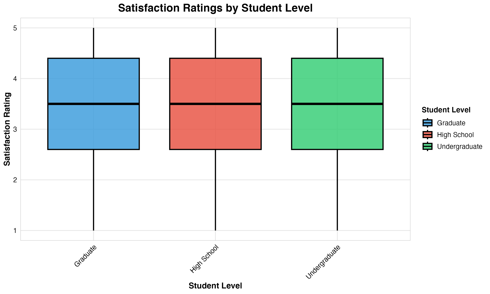
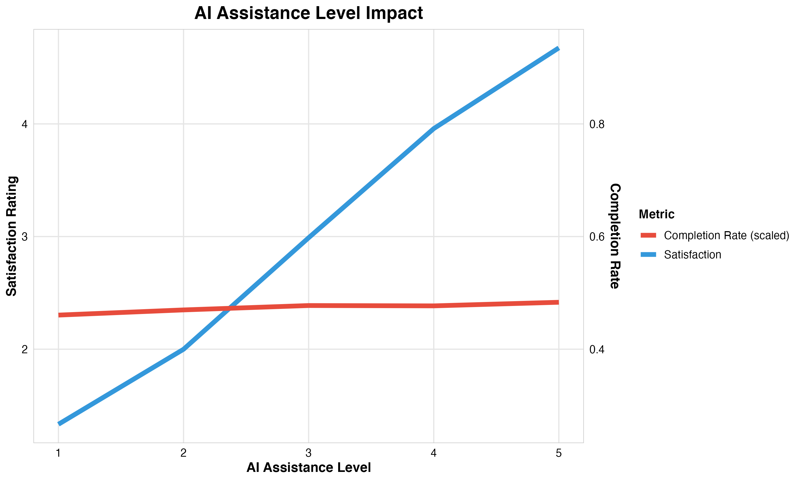
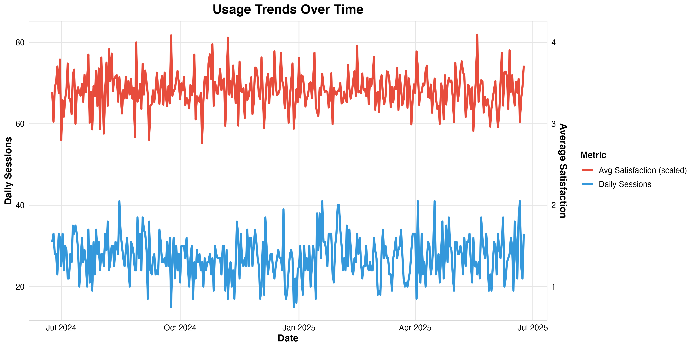
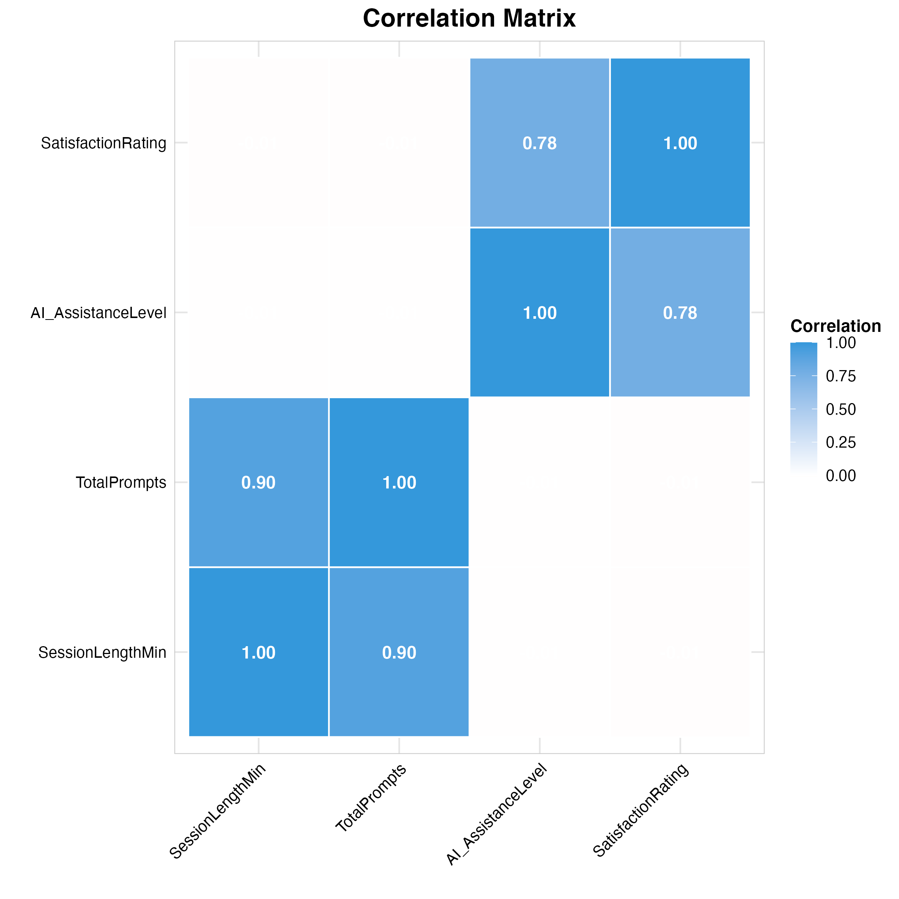
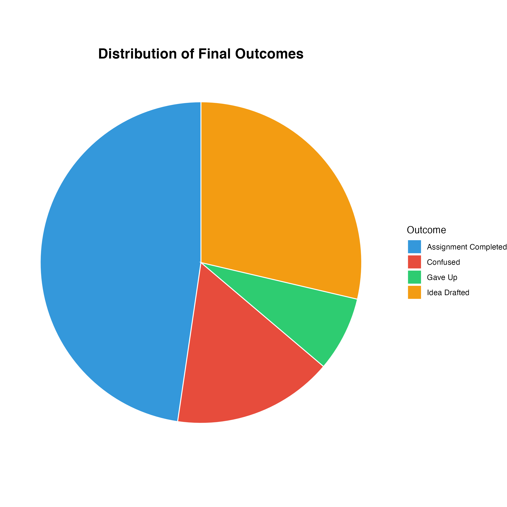
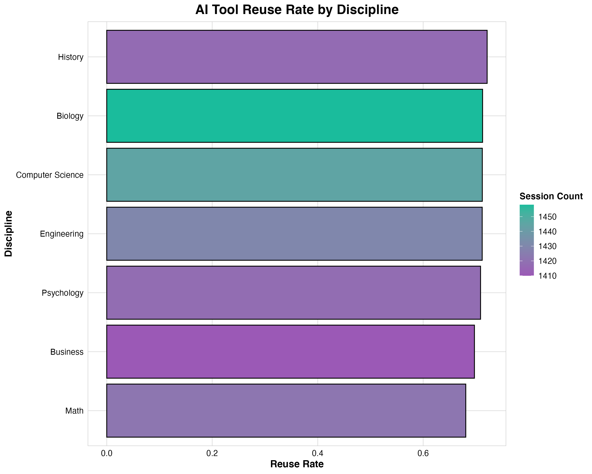

Satisfaction Ratings by Student Level

Key Insight: Satisfaction ratings are remarkably consistent across all student levels, with minimal differences between graduate, undergraduate, and high school students.
Average Satisfaction by Discipline

Key Insight: Biology and History disciplines achieve the highest satisfaction ratings, while Computer Science shows strong performance.
Satisfaction by Task Type

Key Insight: Coding tasks achieve the highest satisfaction ratings, followed by Homework Help and Writing tasks.
AI Assistance Level Impact

Key Insight: Higher assistance levels correlate with increased satisfaction and completion rates.
Session Length vs Satisfaction

Key Insight: Session length shows minimal correlation with satisfaction, suggesting efficiency is more important than duration.
Usage Trends Over Time

Key Insight: Daily session counts and average satisfaction show patterns over the analysis period.
Correlation Matrix

Key Insight: Strong correlation between AI assistance level and satisfaction (r = 0.776).
Distribution of Final Outcomes

Key Insight: Most sessions result in completed assignments, with some leading to idea drafting.
AI Tool Reuse Rate by Discipline

Key Insight: Different disciplines show varying reuse rates, indicating adoption patterns.
Session Efficiency vs Satisfaction

Key Insight: Session efficiency (prompts per minute) shows relationship with satisfaction across student levels.